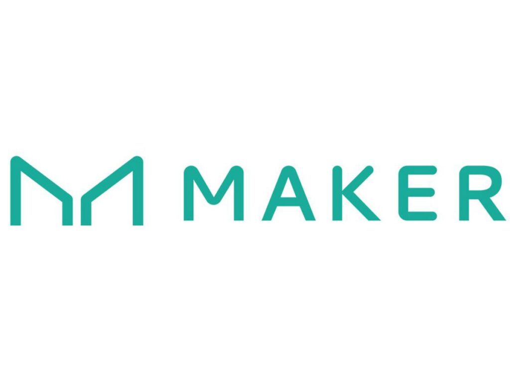
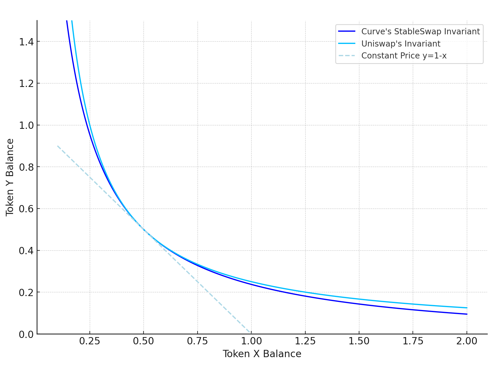

Blockchain & DeFi#
Economic Protocol Design at RDX Works#
While serving as Lead Economist at RDX Works (Radix layer-one protocol developer), I applied systems thinking and macroeconomic principles to design the economics of an algorithmic, partially-collateralized stablecoin protocol. This involved:
Designing economic incentive structures and stability mechanisms for a decentralized stablecoin with focus on protocol-level risk controls
Using macroeconomic frameworks (feedback loops, shock propagation, tail-risk management) to analyze nonlinear dynamics in liquidity management
Applying network science principles to understand protocol-level contagion risks and cascade dynamics
Designing market microstructure adapted to blockchain-native constraints (block times, MEV, atomic composability)
Stablecoins: Taxonomy & Design#
I analyzed a number of stablecoin projects both collateralised (fully or partially, on-chain and off-chain) and algorithmic (Constant Function Market Makers):

Collateralized Stablecoins: Multi-Collateral DAI, Terra-Luna, Frax, FEI, USDT, USDC
Design dimensions: Collateralization ratio, diversification, liquidation mechanics, governance incentives
Automated Market Makers & Market Microstructure#
I analyzed AMM mechanisms and their market microstructure implications based on research including Tarun Chitra’s and Uniswap v.3 and Curve whitepapers. The canonical constant-product market maker prices trades to keep the reserve product invariant, which is what generates slippage and impermanent loss:
where \(x\) and \(y\) are the pool reserves of the two assets and \(k\) is held constant across each swap.

Core AMM Concepts: Liquidity Pools, Impermanent Loss, Slippage, Miner Extractable Value (MEV), Protocol fees
Price impact & execution: Constant product formula, concentrated liquidity, bonding curves
Risk factors: Slippage, divergence loss, toxicity from informed flow, flash loan risks
S&P Global Crypto Research#
At S&P Global, I have co-authored research on cryptocurrency market structure, liquidity and risk.
Liquidity Demographics in Crypto#
A dive into liquidity demographics for crypto asset trading (S&P Global, 2025) — co-authored research analyzing participant behavior and market microstructure in cryptocurrency trading, measuring how quickly an asset can be transformed into fiat or stablecoins without significant cost or price dislocation. The research examined:
Trading participation patterns across time zones and market regimes
Liquidity concentration and market depth evolution
Micro-structural drivers of price efficiency and volatility
Insights for CFMM designs focused on reducing price impact and slippage
Bitcoin Volatility & Market Dynamics#
Bitcoin Volatility Trends: A Deep Dive into Market Dynamics and Risk (S&P Global, 2026) — co-authored research examining Bitcoin’s evolving role in financial markets. Key findings:
Bitcoin volatility, while still higher than traditional assets, is on a long-term downtrend as institutional adoption grows
The perpetual-futures-dominated trading structure (leverage + automated liquidations) amplifies price volatility
Bitcoin functions more as a hedge against long-term currency debasement than against short-term inflation
Deeper integration with traditional finance (spot ETFs, corporate treasury allocations) introduces new linkages and risks
This work has informed my thinking on liquidity-aware protocol design and the role of market microstructure in stable-asset protocols, with ongoing interest in CFMM designs that reduce price impact and slippage.